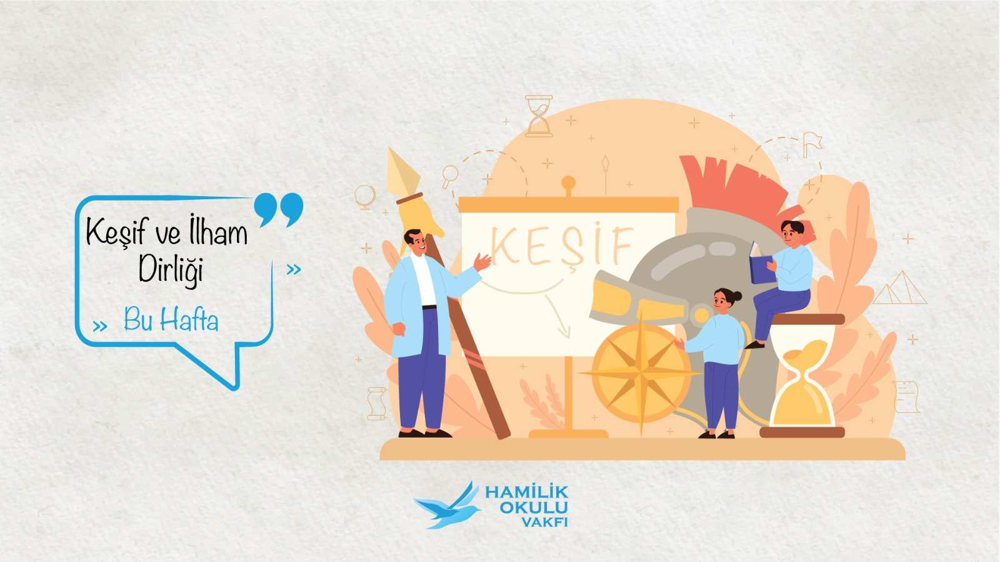

Değerleri bugünün dilinde yeniden düşünmek
Çalışma aynı zamanda, sözü edilen “kadim değerler”in modern “meslek hayatı” içinde “güncellenmesi” arayışını da kapsamaktadır.
Kadim ahilik değerlerini modern meslek hayatıyla buluşturan, gençlerin mesleklerine maddi kazanımların ötesinde ahlaki, insani ve manevi değerlerle bakmasını amaçlayan bir vakıf hareketi.

Hamilik Okulu Vakfı, Selçuklu ve Osmanlı medeniyetlerindeki “Ahilik ve Esnaf/Meslek Teşkilatları”nın “ahlaki” ve “insani” değerlerini üniversitede öğrenim görmekte olan gençlere tanıtmak, farkındalıklarını arttırmak ve meslek hayatına sadece maddi değil, aynı zamanda manevi ve moral “değerler” ile de bakmalarını sağlayacak bir idraki kazandırmak gayesiyle, 2012 yılında kurulmuştur.
Çalışma aynı zamanda, sözü edilen “kadim değerler”in modern “meslek hayatı” içinde “güncellenmesi” arayışını da kapsamaktadır.
Vakfın ve programın kurucuları, girişimci, yatırımcı ve profesyonel olarak hâlâ iş hayatında aktif olarak çalışan; her biri de işlerinde uzman, tecrübeli ve başarılı meslek insanlarıdır.
Daha ziyade İTÜ İşletme Fakültesi mezunu olan kurucuların bu gaye üzerine olan çaba ve birliktelikleri, 1995 yılında ilk olarak kurmuş oldukları Ekotek Vakfı’ndan beri devam etmektedir.
Program herhangi bir kamu ya da özel kuruluşun değil, sözü edilen kurucu “vakıf insan”ların bireysel katkılarıyla sürdürülmektedir.
Vakfın çalışmaları, yaklaşımı ve güncel faaliyetleri için resmi internet sitesini ziyaret edin.